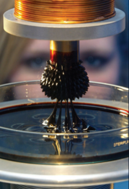

Applications of Electronic and Magnetic Fields
Callout
Microchips have many uses. Credit card companies and banks use them to help prevent theft of account information and fraud. Microchips are more secure than magnetic stripes, less easily damaged, and very convenient. With contactless chip
cards, which are read using a magnetic field, you do not even have to swipe or insert your card; you just wave the card over the microchip reader.

RFID Chips
Radio-frequency identification technology (RFID) is a tracking technology that uses microchips less than a millimeter in size. The microchips act as transmitters and responders (transponders) to communicate data by radio waves. This technology uses electromagnetic waves, which are a combination of electric and magnetic fields.

RFID tags can be read inside containers and through materials such as water and body tissue. They can be embedded into any item not made of metal. They are used in wooden shipping pallets (to identify the products the pallets contain), plastic key fobs, hotel keys, credit cards, gas cards, and driver’s licenses. While barcodes can only be read one at a time, hundreds of RFID tags can be read simultaneously.

MR Fluid Dampers
Architects and engineers have long known that for a structure to withstand the seismic waves of an earthquake, the structure must be flexible, not rigid. Magnetorheological fluid (MR fluid) is a material that can change state from solid to liquid and back to solid again using a magnetic field.

Under normal conditions, an MR fluid is solid, but it changes to a liquid in response to sensors placed in strategic locations that control a magnetic field during an earthquake. This semi-liquid state of certain building components allows a building to absorb shockwaves and reduces potential damage. Buildings constructed with MR fluids are called smart structures

High-Voltage Power Lines
Some early studies showed a link between magnetic field strength and an increased risk of cancer. People, particularly young children, living under or near large, high-voltage transformers were thought to be at high risk for developing leukemia. Since that time, however, scientists from Health Canada, the Federal-Provincial-Territorial Radiation
Protection Committee (FPTRPC), and the U.S.

Sometimes a correlation is weak but is still reported as a result. For example, a neighborhood may have a high incidence of cancer and be located next to a high-voltage line. A result may be reported saying that high-voltage lines have been linked to cancer.

Medical Applications
In a magnetic resonance imaging (MRI) device, magnetic fields interact with these hydrogen atoms, producing images that doctors can use to diagnose injuries and diseases. The MRI uses a superconducting magnet to create a large, stable magnetic field of approximately 2.0 T. A large magnetic field is needed to produce precise images of the soft tissues inside the human body.

For an MRI machine to obtain images, a patient must lie on a movable bed that slides into a tube in the center of the magnetic field. Hydrogen atoms in the body can behave like atomic-sized compasses whose north and south poles normally point in random, changing directions.